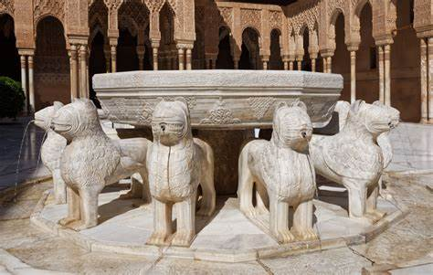
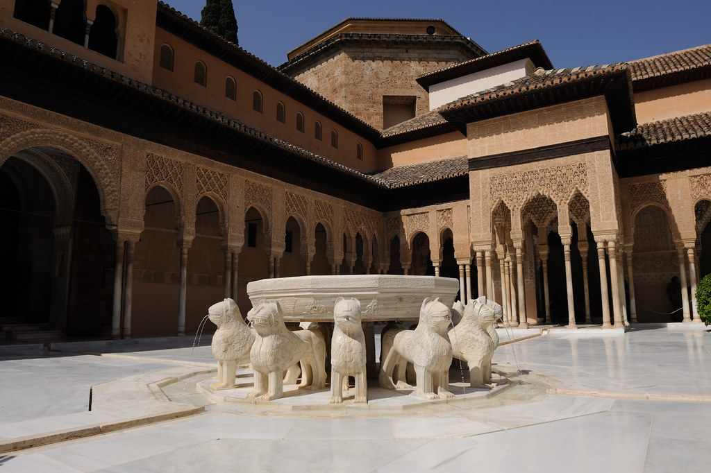

Cuenta la leyenda que hubo una vez, hace ya bastantes años, una princesa árabe llamada Zaira. Era bella, inteligente y sensible; pero su padre, el rey, era todo lo contrario: frío, cruel, malvado, tacaño. La princesa, junto a su padre, viajó a Al-Andalus, y se alojó en la Alhambra de Granada. La princesa estaba tan encantada con pisar Granada, que todo le parecía un sueño. En cambio, a su padre se le revolvía el estómago con cada paso. Al rey, sólo con pisar Granada, le entraban nauseas mientras que a la princesa cada paso que daba le parecía un sueño.
Zaira se sentía más granadina que africana, ya que su país le parecía un infierno. El rey prohibía a Zaira salir a la calle y relacionarse con la gente. Sólo tenía la compañía de un talisman que le colgaba del cuello. Solía pasar la mayor parte del tiempo en un patio muy iluminado. Un día se vio sorprendida por muchacho que saltó la valla, y que le dijo que la había visto desde afuera y que la quería mucho. Ella le instó a que se fuera, porque si se enteraba su padre, no dudaría en cortarle la cabeza, él o uno de sus 11 hombres de confianza. Entonces se fue el muchacho, llamado Arturo, con la promesa de volver.
El día en el que volvió Arturo, el rey lo vio y lo encerró en las mazmorras. Poco después la princesa, abatida, porque su amado podía morir, encontró en una habitación, el diario de su padre. Pensó que no debía leerlo, pero algo en su interior la impulsó a abrirlo. Lo hizo y en una de las páginas, escrita cuando ella tenía tan solo un año de edad, leyó lo siguiente: "Ya he matado al rey y a la reina. De la princesa Zaira me he apiadado. Gracias a mis 11 hombres, he conseguido ocupar el trono. Ahora creerá que yo soy su padre. Espero que la princesa no se entere nunca del maleficio de su talismán."
Zaira, confusa, llamó al rey y a sus 11 hombres y los reunió en el patio donde ella solía estar. Llorando, le preguntó al rey si aquello era verdad. El rey, convencido de que con sus 11 hombres al lado, Zaira no podía ni tan siquiera tocarlo, le dijo que era verdad. En ese mismo instante, Zaira recordó que su madre, le había echado un maleficio a su talisman: el día que Zaira supiera la verdad, al rey y a sus 11 hombres, les pasaría algo terrible. En ese momento el amuleto se activó. Zaira, sentía la rabia de un león, y eso dio lugar a que el talisman convirtiera al rey y a sus 11 hombres, en leones de piedra.
Desde entonces, a ese patio se le llama el "Patio de los Leones" y su fuente tiene 12 leones alrededor que son el rey, y sus 11 hombres, que al ser convertidos en leones de piedra llevan ahí desde entonces. Como no podía ser de otro modo, Zaira rescató a Arturo y vivieron felices para siempre.
